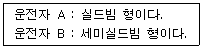
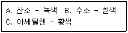

굴삭기운전기능사 (2009-07-12 기출문제)
1. 작업 중 운전자가 확인해야 할 것으로 틀린 것은?
- 온도계기
- 전류계기
- 오일압력계기
- 실린더 압력
(정답률: 75%)

2. 건설기계기관에서 크랭크 축(crank shaft)의 구성부품이 아닌 것은?
- 크랭크 암(crank arm)
- 크랭크 핀(crank pin)
- 저널(journal)
- 플라이 휠(fly wheel)
(정답률: 69%)
3. 엔진작동 중 냉각수의 온도가 정상적으로 올라가지 않을 때의 원인으로 맞는 것은?
- 수온 조절기의 열림
- 시동 불능
- 축전지의 비중 저하
- 발전기 작동 불능
(정답률: 86%)
4. 냉각수 순환용 물 펌프가 고장 났을 때 기관에 나타날 수 있는 현상으로 가장 적합한 것은?
- 기관 과열
- 시동 불능
- 축전지의 비중 저하
- 발전기 작동 불능
(정답률: 86%)
5. 건설기계 기관에서 사용하는 윤활유의 주요 기능이 아닌 것은?
- 기밀작용
- 방청작용
- 냉각작용
- 산화작용
(정답률: 65%)
6. 배기가스의 색과 기관의 상태를 표시한 것으로 가장 거리가 먼 것은?
- 무색 - 정상
- 검은색 - 농후한 혼합비
- 황색 - 공기 청정기의 막힘
- 백색 또는 회색 - 윤활유의 연소
(정답률: 61%)
7. 건식 공기청정기의 효율저하를 방지하기 위한 방법으로 가장 적합한 것은?
- 기름으로 닦는다.
- 마른 걸레로 닦아야 한다.
- 압축공기로 먼지 등을 털어낸다.
- 물로 깨끗이 세척한다.
(정답률: 81%)
8. 디젤기관과 관계없는 것은?
- 경유를 연료로 사용한다.
- 점화장치 내에 배전기가 있다.
- 압축 착화한다.
- 압축비가 가솔린기관보다 높다.
(정답률: 65%)
9. 기관의 전동식 냉각팬은 어떤 온도에 따라 ON/OFF 되는가?
- 냉각수
- 배기관
- 흡기
- 엔진오일
(정답률: 76%)
10. 기관의 연소실 모양과 관련이 적은 것은?
- 기관출력
- 열효율
- 엔진속도
- 운전 정숙도
(정답률: 37%)
11. 디젤엔진의 연료 분사량 조정은?
- 프라이밍 펌프를 조정
- 리미트 슬리브를 조정
- 플런저 스프링의 장력 조정
- 컨트롤 슬리브와 피니언의 관계 위치를 변화하여 조정
(정답률: 42%)
12. 오일 압력이 낮은 것과 관계없는 것은?
- 커넥팅로드 대단부 베어링과 핀저어널의 간극이 클 때
- 실린더 벽과 피스톤 간극이 클 때
- 각 마찰 부분 윤활 간극이 마모되었을 때
- 엔진 오일에 경유가 혼입되었을 때
(정답률: 20%)
13. 현재 널리 사용되는 할로겐램프에 대하여 운전자 두 사람(A, B)이 아래와 같이 서로 주장하고 있다. 어느 운전자의 말이 옳은가?

- A가 맞다.
- B가 맞다.
- A, B 모두 맞다.
- A, B 모두 틀리다.
(정답률: 60%)
14. 다음 중 축전지가 내부 방전하여 못쓰게 된 이유로 가장 적절한 것은?
- 축전지 액이 규정보다 약간 높은 상태로 계속 사용했다.
- 발전기의 출력이 저하되었다.
- 축전지 비중을 1.280으로 하여 계속 사용했다.
- 축전지 액이 거의없는 상태로 장기간 사용했다.
(정답률: 74%)
15. 충전된 축전지를 방치시 자기방전(self-discharge)의 원인과 가장 거리가 먼 것은?
- 음극판의 작용물질이 황산과 화학작용으로 방전
- 전해액 내에 포함된 불순물에 의해 방전
- 전해액의 온도가 올라가서 방전
- 양극판의 작용물질 입자가 축전지 내부에 단락으로 인한 방전
(정답률: 54%)
16. 동절기 축전지 관리요령으로 틀린 것은?
- 충전이 불량하면 전해액이 결빙될 수 있으므로 완전 충전시킨다.
- 시동을 쉽게 하기 위하여 축전지를 보온시킨다.
- 전해액 수준이 낮으면 운전 후 증류수를 보충한다.
- 전해액 수준이 낮으면 운전 시작 전 아침에 증류수를 보충한다.
(정답률: 59%)
17. 기동 전동기의 시험과 관계없는 것은?
- 부하 시험
- 무부하 시험
- 관성 시험
- 저항 시험
(정답률: 62%)
18. 건설기계에 사용하는 교류발전기의 구조에 해당하지 않는 것은?
- 스테이터코일
- 로터
- 필드코일(애자코일)
- 다이오드
(정답률: 46%)
19. 지게차 조향바퀴의 얼라이먼트 요소가 아닌 것은?
- 캠퍼(CAMBER)
- 토인(TOE IN)
- 캐스터(CASTER)
- 부스터 (BOOSTER)
(정답률: 71%)
20. 트랙장력을 조정해야 할 이유가 아닌 것은?
- 구성품 수명연장
- 트랙의 이탈 방지
- 스윙모터의 과부하방지
- 스프로킷 마모방지
(정답률: 52%)
21. 기중기의 지브가 뒤로 넘어지는 것을 방지하기 위한 장치는?
- 블라이들 프레임
- 지브 백 스톱
- 지브전도방지장치
- A 프레임
(정답률: 51%)
22. 로더의 작업 중 그레이딩 작업이란?
- 굴착 작업
- 깍아내기 작업
- 지면 고르기 작업
- 적재 작업
(정답률: 77%)
23. 클러치 차단이 불량한 원인이 아닌 것은?
- 릴리스 레버의 마멸
- 클러치판의 흔들림
- 페달 유격이 과대
- 토션 스프링의 약화
(정답률: 44%)
24. 정상 작동 되었던 변속기에서 심한 소음이 난다. 그 원인과 가장 거리가 먼 것은?
- 점도지수가 높은 오일 사용
- 변속기 오일의 부족
- 변속기 베어링의 마모
- 변속기 기어의 마모
(정답률: 71%)
25. 타이어의 구조에서 직접 노면과 접촉되어 마모에 견디고 적은 슬립으로 견인력을 증대시키는 부분의 명칭은?
- 트레드(tread)
- 브레이커(breaker)
- 카커스(carcass)
- 비드(bead)
(정답률: 63%)
26. 굴삭기 운전시 작업안전 사항으로 적합하지 않는 것은?
- 스윙하면서 버킷으로 암석을 부딪쳐 파쇄하는 작업을 하지 않는다.
- 안전한 작업 반경을 초과해서 하중을 이동시킨다.
- 굴삭하면서 주행하지 않는다.
- 작업을 중지 할 때 파낸 모서리부터 장비를 이동시킨다.
(정답률: 81%)
27. 다음 교통안전 표지에 대한 설명으로 맞는 것은?
- 최고 중량 제한표지
- 최고 시속 30km 속도 제한표지
- 최저 시속 30km 속도 제한표지
- 차간거리 최저 30m 제한표지
(정답률: 68%)
28. 건설기계를 등록 전에 일시적으로 운행할 수 있는 경우가 아닌 것은?
- 등록신청을 위하여 건설기계를 등록지로 운행하는 경우
- 신규등록검사 및 학인검사를 받기 위하여 건설기계를 검사장소로 운행하는 경우
- 건설기계를 대여하고자 하는 경우
- 수출을 하기 위하여 건설기계를 선적지로 운행하는 경우
(정답률: 72%)
29. 성능이 불량하거나 사고가 빈발한 건설기계에 대해 실시하는 검사는?
- 수시검사
- 정기검사
- 구조변경검사
- 예비검사
(정답률: 70%)
30. 고의 또는 과실로 가스공급시설을 손괴하거나 기능에 장애를 입혀 가스의 공급을 방해한 때의 조종사 면허 효력정지 기간은?
- 240일
- 180일
- 90일
- 45일
(정답률: 47%)
31. 교차로의 가장자리 도는 도로의 모퉁이로부터 관련 법상 몇 m 이내의 장소에 정차 및 주차를 해서는 안되는가?
- 4m
- 5m
- 6m
- 8m
(정답률: 78%)
32. 정지선이나 횡단보도 및 교차로 직전에서 정지하여야 할 신호 중 옳은 것은?
- 황색 및 적색 등화
- 녹색 및 황색 등화
- 녹색 및 적색 등화
- 적색 및 황색 등화의 점멸
(정답률: 76%)
33. 교통사고를 야기한 도주차량 신고로 인한 벌점상계에 대한 특혜점수는?
- 40점
- 특혜점수 없음
- 30점
- 120점
(정답률: 43%)
34. 유도표시가 없는 교차로에서의 좌회전 방법으로 가장 적절한 것은?
- 운전자 편한 대로 운전한다.
- 교차로 중심 바깥쪽으로 서행한다.
- 교차로 중심 안쪽으로 서행한다.
- 앞차의 주행방향으로 따라가면 된다.
(정답률: 68%)
35. 건설기계조종사면허가 취소되거나 효력정지처분을 받은 후에도 건설기계를 계속하여 조종한 자에 대한 벌칙은?(개정된 법률에 따릅니다.)
- 과태료 50만원
- 1년 이하의 징역 또는 1000만원 이하의 벌금
- 최소기간 연장조치
- 조종사면허 취득 절대 불가
(정답률: 80%)
36. 건설기계사업의 등록은 누구에게 하는가?
- 국토해양부장관
- 시 도지사
- 행정안전부장관
- 대한건설기계협회장
(정답률: 82%)
37. 유압 모터의 종류가 아닌 것은?
- 기어 모터
- 베인 모터
- 피스톤 모터
- 직권형 모터
(정답률: 65%)
38. 축합기(어큐뮬레이터)의 기능과 관계가 없는 것은?
- 충격 압력 흡수
- 유압 에너지 축적
- 릴리프 밸브 제어
- 유압 펌프 맥동 흡수
(정답률: 63%)
39. 유압 회로의 최고압력을 제어하는 밸브로서 회로의 압력을 일정하게 유지시키는 밸브는?
- 감압 밸브(reducing valve)
- 카운터 밸런스 밸브(counter balance valve)
- 릴리프 밸브(relief valve)
- 무부하 밸브(unloading valve)
(정답률: 55%)
40. 다음 중 액추에이터의 입구 쪽 관로에 설치한 유량제어 밸브로 흐름을 제어하여 속도를 제어하는 회로는?
- 시스템 회로(system circuit)
- 블리드 오프 회로(bleed-off circuit)
- 미터인 회로(meter-in circuit)
- 미터 아웃 회로(meter-out circuit)
(정답률: 59%)
41. 유압장치에 사용되는 밸브부품의 세척유로 가장 적절한 것은?
- 엔진 오일
- 물
- 경유
- 합성세제
(정답률: 55%)
42. 유압유의 첨가제가 아닌 것은?
- 마모 방지제
- 유동점 강하제
- 산화 방지제
- 점도지수 방지제
(정답률: 43%)
43. 차동 회로를 설치한 유압기기에서 속도가 나지 않는 이유로 가장 적절한 것은?
- 회로 내에 감압밸브가 작동하지 않을 때
- 회로 내에 간로의 직경차가 있을 때
- 회로 내에 바이패스 통로가 있을 때
- 회로 내에 압력손실이 있을 때
(정답률: 62%)
44. 액추에이터의 운동속도를 조정하기 위하여 사용되는 밸브는?
- 압력제어 밸브
- 온도제어 밸브
- 유량제어 밸브
- 방향제어 밸브
(정답률: 59%)
45. 유압 펌프의 기능을 설명한 것으로 가장 적합한 것은?
- 유압회로 내의 압력을 측정하는 기구이다.
- 어큐뮬레이터와 동일한 기능을 한다.
- 유압에너지를 동력으로 변환한다.
- 원동기의 기계적 에너지를 유압에너지로 변환한다.
(정답률: 46%)
46. 운전 중 작동유는 공기 중의 산소화 화합하여 열화 된다. 이 열화를 촉진 시키는 직접적인 인자에 속하지 않는 것은?
- 열의 영향
- 금속의 영향
- 수분의 영향
- 유압이 낮을 때 영향
(정답률: 48%)
47. 작업 중 화재 발생의 점화 원인이 될 수 있는 것과 가장 거리가 먼 것은?
- 과부하로 인한 전기장치의 과열
- 부주의로 인한 담뱃불
- 전기배선 합선
- 연료유의 자연발화
(정답률: 76%)
48. 다음 보기에서 가스 용접기에 사용되는 용기의 도색이 옳게 연결된 것을 모두 고른 것은?

- A, B
- B, C
- A, C
- A, B, C
(정답률: 61%)
49. 방화 대책의 구비사항으로 가장 거리가 먼 것은?
- 소화기구
- 스위치 표시
- 방화벽 및 스프링쿨러
- 방화사
(정답률: 75%)
50. 안전보건표지의 종류와 형태에서 그림의 표지로 맞는 것은?
- 안전복 착용
- 안전모 착용
- 보안면 착용
- 출입금지
(정답률: 82%)
51. 벨트에 대한 안전사항으로 틀린 것은?
- 벨트를 걸 때나 벗길 때에는 기계를 정지한 상태에서 실시한다.
- 벨트의 이음쇠는 돌기가 없는 구조로 한다.
- 벨트가 풀리에 감겨 돌아가는 부분은 커버나 덮개를 설치한다.
- 바닥면으로부터 2m 이내에 있는 벨트는 덮개를 제거한다.
(정답률: 66%)
52. 가스누설 검사에 가장 좋고 안전한 것은?
- 아세톤
- 성냥불
- 순수한 물
- 비눗물
(정답률: 86%)
53. 다음 중 작업 표준의 목적에 해당 하는 것은?
- 위험요인의 제거
- 경영자의 이해
- 작업방식의 검토
- 설비의 적정화 및 정리정돈
(정답률: 55%)
54. 수공구 사용시 유의사항으로 맞지 않는 것은?
- 토크렌치는 볼트를 풀 때 사용한다.
- 무리한 공구 최급을 금한다.
- 공구를 사용하고 나면 일정한 장소에 관리 보관한다.
- 수공구는 사용법을 숙지하여 사용한다.
(정답률: 82%)
55. 폭풍이 불어 올 우려가 있을 때에는 옥외에 있는 주행 크레인에 대하여 이탈을 방지하기 위한 조치를 하여야 한다. 폭풍이란 순간 풍속이 매초당 몇 미터를 초과하는 바람인가?
- 10
- 20
- 30
- 40
(정답률: 50%)
56. 수공구 사용에서 드라이버 사용방법으로 틀린 것은?
- 날 끝이 홈의 폭과 기이에 맞는 것을 사용한다.
- 날 끝이 수평이어야 한다.
- 전기 작업시에는 절연된 자루를 사용한다.
- 단단하게 고정된 작은 공작물은 가능한 손으로 잡고 작업한다.
(정답률: 75%)
57. 굴착공사를 위하여 가스 배관과 근접하여 H 파일을 설치하고자 할 대 가장 근접하여 설치할 수 있는 수평거리는?
- 10cm
- 20cm
- 30cm
- 50cm
(정답률: 68%)
58. 다음 중 지하에 매설된 도시가스 배관의 최고 사용압력이 저압인 경우 배관의 표면색은?
- 적색
- 갈색
- 황색
- 회색
(정답률: 57%)
59. 고압선로 주변에서 건설기계에 의한 작업 중 고압선로 또는 지지물에 접촉 위험이 가장 높은 것은?
- 붐 또는 권상로프
- 상부 회전체
- 하부 주행체
- 장비 운전석
(정답률: 77%)
60. 한전에서는 고압이상의 전선로에 대하여 안전거리를 규정하고 있다. 154kV의 송전선로에 대한 안전거리로서 올바른 것은?
- 350cm 이상
- 160cm 이상
- 75cm 이상
- 30cm 이상
(정답률: 51%)